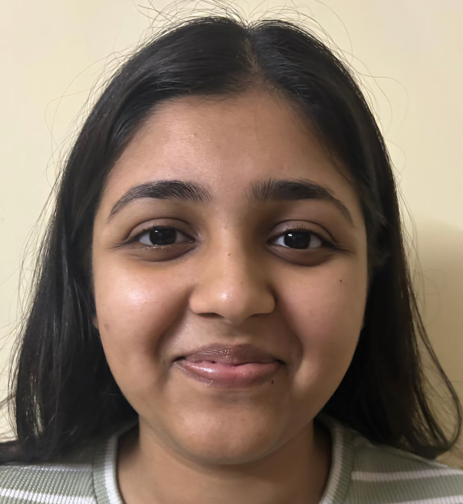

Ayushi Gupta

Summary
I am eager to expand my expertise in Data Science through continued education and practical research. I am committed
to pursuing a master's degree and a subsequent PhD, focusing on refining my machine learning skills to develop
innovative data models. My passion is to use this knowledge in the research and development sector, aiming to create
significant societal improvements.
Education
- Bachelor of Technology, Computer Science and Engineering - SRM Institute of Science and Technology (2021-2025): CGPA 9.65
Work Experience
- Pragma Apps and Technologies Pvt. Ltd. (Online: Jan 2024-Nov 2024) - ML Intern
- Developed a machine learning model to detect the presence of adults in daycares.
- Using the model the application detects the number of children and adults in the daycare using real-time
CCTV footage.
- Experimented with YOLO models and YOLOv10 worked the best for detection.
- National University of Singapore (Singapore: Jun 2024) - Academic Intern
- Participated in the Global Academic Internship Programme focusing on Big Data Analytics, Deep
Learning, and AWS Services.
- Completed and led the human pose estimation project which was a comparative study to detect various
yoga, sitting, and standing postures using YOLO v5, v8, and Detectron2 with faster RCNN.
- Apollo Tyres Ltd. (Online: Dec 2023-May 2024) - Trainee
- Worked with the team on the automation of footprint analysis.
- Used libraries like tensorflow, pytorch, matplotlib, and streamlit.
- My role was to help in data analysis, data interpretation, and data visualization.
Skills and Softwares
- Python: ⭐️⭐️
- SQL: ⭐️⭐️⭐️
- Kaggle: ⭐️⭐️
- Roboflow: ⭐️⭐️⭐️⭐️
- Tableau: ⭐️⭐️
- AWS Services: ⭐️⭐️
Projects
Fingerspelling for Indian Sign Language, 2025:
Used Swin Transformer for recognition of ISL and
creating an interface using Streamlit for using fingerspelling, translating to multiple languages in
speech and audio.Stock Prediction using Sentiment Analysis, 2024:
Prediction of stock market trends for the top four
sectors in India using models like BiLSTM and FinBERT, with web scraping on Money Control and
Google News.Sign Language Recognition, 2024:
Developed and evaluated CNN models and ensemble techniques
(stacking, voting) for ASL/ISL classification. Addressed overfitting by implementing hybrid
CNN+BiLSTM for temporal patterns.Human Pose Estimation, 2024:
A comparative study to detect various yoga, sitting, and standing
postures using YOLO v5, v8, and Detectron2 with Faster R-CNN.Oral Cancer Detection, 2024:
A model using VGG16 to predict oral cancer stages, the first of its kind
with a categorical accuracy of 50% due to limited data.Amazon Mobile Reviews Sentimental Analysis, 2023:
Detection and comparison of sentiments in
Amazon reviews of popular smartphone brands using NLTK, Vader, and Roberta.Smart India Hackathon project: EarthFinesse, Military Terrain Classifier, 2023:
Classification of
terrains for military defense purposes using Python and MobileNetV2.
Achievements
- 3rd prize in Technical Talk at the Technovate Event by DSBS, SRM.
- Paper presentation in IConIC Conference by PECTEAM 2K24, Panimalar Engineering College.
- Paper presentation in ICIoT 2025 Conference by SRM Institute of Science and Technology.
- Out of 150+ applications selected for ACM India Winter School 2024 for women at DAIICT,
Gandhinagar on the topic “Algorithms for Big Data and Machine Learning”.
Certificates
- Big Data Analytics using Deep Learning, AWS (2024)
- IBM Gen AI Fundamentals, Coursera (2024)
- MATLAB for Data Processing and Visualization, Mathworks(2023)
- IBM Data Science, Coursera (2023)
- MATLAB Onramp, Mathworks (2023)
- Networking Essentials, Cisco Networking Academy (2023)
Extra Curricular
- Operations Lead, Blockchain Club SRM (Oct 2022 - Apr 2024)
- Secretary, SRM ACM Student Chapter (Mar 2024 - Dec 2024 )
Community Service
- English Language Volunteer, Udaan (Jan 2024 - Apr 2024)
Other